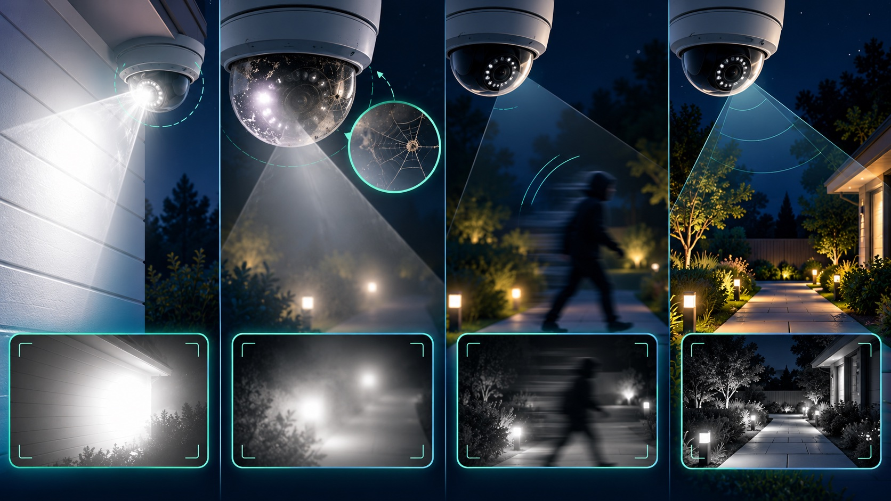

Choose resolution after defining the detail you need at a specific place and distance. A 4K camera spreads its pixels across the whole field of view, so a person far away in a very wide scene may still occupy too few pixels for useful identification. A lower-resolution camera with the right lens, angle and tighter view can sometimes capture better target detail.
These numbers describe the frame, not the amount of detail on a face, doorway or vehicle. Recorded resolution can also differ from a camera's sensor specification, substream resolution or live-app preview.
Pixel density measures how many image pixels cover a unit of scene width at the target. As a simple planning estimate, divide horizontal image pixels by the scene width at the distance that matters. A 1920-pixel-wide image spread across 20 feet provides roughly 96 pixels per foot across that line; spread across 60 feet, it provides roughly 32 pixels per foot.
Perspective means the usable width changes with distance, so a single calculation does not describe the whole image. Lens choice, mounting position and the exact target zone must be included in the design.
Axis summarizes an IEC 62676-4:2014 pixel-density model with four common human-viewing goals:
These are planning guidelines, not guarantees. Axis notes that lighting direction, optics, compression and other conditions affect the result. Analytics can also have different requirements from a human operator, so follow the analytics vendor's installation rules when detection software is part of the goal.
A wide camera may give excellent context but place too few pixels on a distant target. Digital zoom only enlarges the pixels already recorded; it cannot recreate missing detail. A common design is to pair an overview camera with a tighter detail camera at a controlled path such as an entrance, driveway choke point or service counter.
This is why camera count and placement should start with coverage goals. Our home camera placement guide explains how overview and detail views work together.
The lens controls field of view and how much of the sensor is devoted to the target. Axis explains that the ability to recognize or identify also depends on motion, compression, lighting, focus and lens distortion. A high-resolution sensor behind an unsuitable lens can still deliver unusable evidence.
For a target farther away, a longer focal length or narrower view may provide more useful detail than simply selecting more megapixels. Varifocal cameras can help during setup, but the final focal length and focus must be locked and checked in recorded video.
Long exposure can brighten a dark scene while blurring a moving face. Strong backlight can hide facial detail even when the pixel count is adequate. Infrared reflection, lens contamination and poor focus can also reduce useful resolution. Validate the camera under the actual lighting and motion expected at the site, following the symptom checks in our night-vision troubleshooting guide.
Resolution is only one part of the video stream. Heavy compression can remove detail; a low frame rate or slow shutter can miss the useful moment; and a constrained bitrate can reduce quality during a busy scene. Axis notes that higher frame rate requires more bandwidth and storage, while its compression guidance emphasizes that codec and bitrate choices affect downstream image quality.
Plan from the recorder's actual settings and measured bitrate. Use our camera bandwidth guide for remote or cloud traffic and our retention guide for storage planning.
A tight view and predictable walking path may provide strong target detail without covering a huge area. Prioritize face angle, backlight control and recorded motion over a headline megapixel count.
Define whether the goal is general activity, vehicle description, driver recognition or a specialized plate-capture task. One wide camera rarely delivers every goal across a large lot. Dedicated detail views may be needed at entrances or other narrow paths.
High resolution helps maintain pixel density across a wider scene, but distance still reduces target detail. Use the view for detection and context, then add tighter coverage where identification matters.
Shorter distances may reduce the need for extreme resolution. Lens angle, ceiling height, lighting and the need to see hands, merchandise or faces should determine the view.
Tech Secure 360 can plan and test overview and detail views for homes and businesses across Greater Los Angeles, then verify the recorded result at the distances and lighting conditions that matter.

Plan views around entrances, approaches, lighting and recorded detail.

Diagnose IR glare, dirty lenses, motion blur, backlighting and weak lighting.
Estimate retention from real bitrate, recording mode and usable storage.
Tell us about your place and we'll respond within one business day with a tailored plan and pricing. Or call us right now.
Your request is in. A Tech Secure 360 specialist will reach out within one business day. Need help now? Call (747) 336-2737.